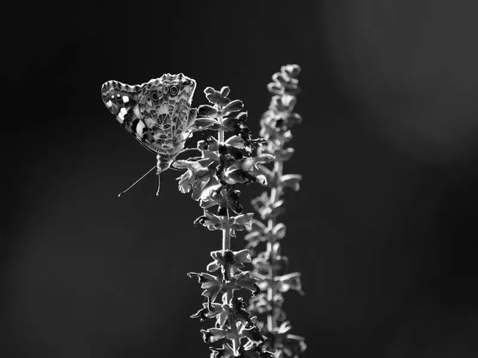
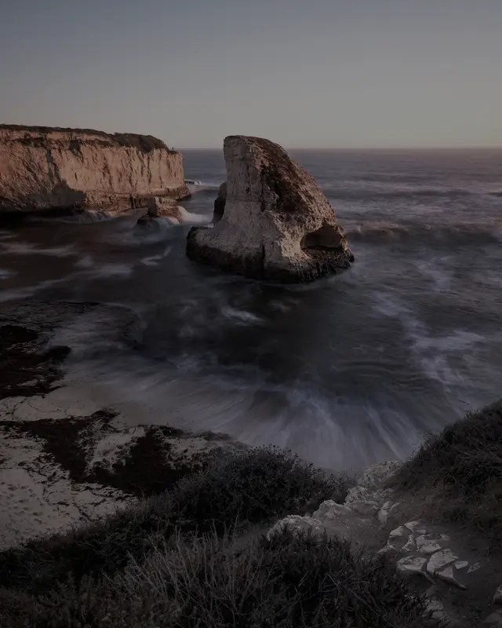
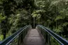

<img-compare>
A zero-dependency before/after slider. Drag, click, hover, or focus the handle and use the arrow keys, Home/End and PageUp/PageDown.
Drag or keys: lifting the shadows
The same storm photo, before and after a brightness/gamma edit.
Hover mode
hover: the divider follows the mouse; touch still drags.

Vertical
orientation="vertical" on a portrait photo.

Mismatched sizes
The "before" file is only 96 px wide. Both layers fill the same box, so the pair still lines up.

Photo credits
All photos are from Unsplash (Unsplash License) and the "before"/"after" variants are edits made for this demo: Marek Piwnicki (lightning), Dmytro Koplyk (butterfly), Tim Swaan (footbridge), Karla Hernandez (sea stack).